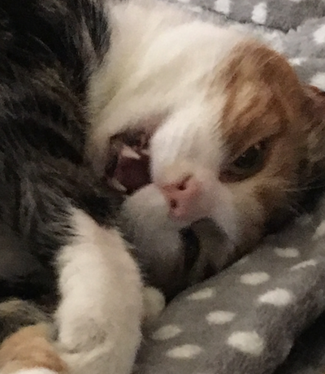
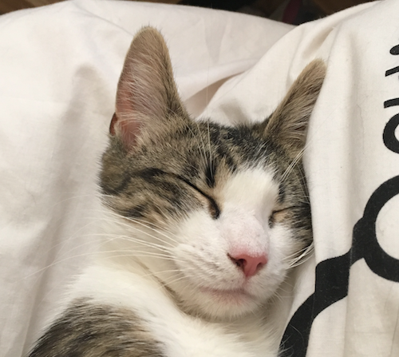
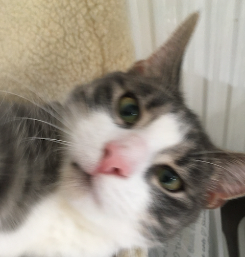
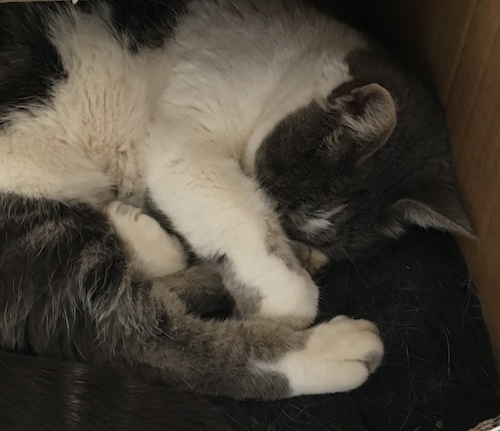
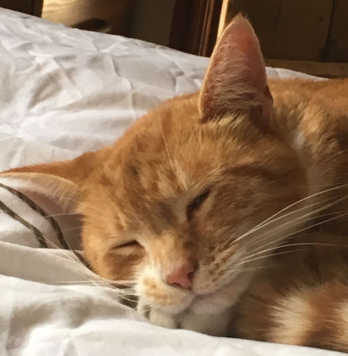
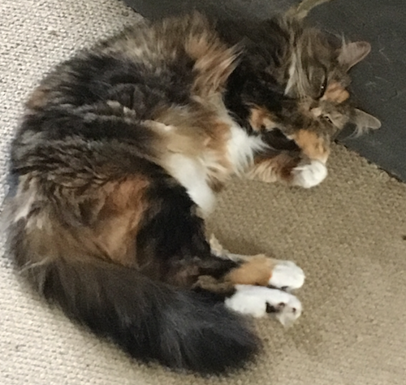
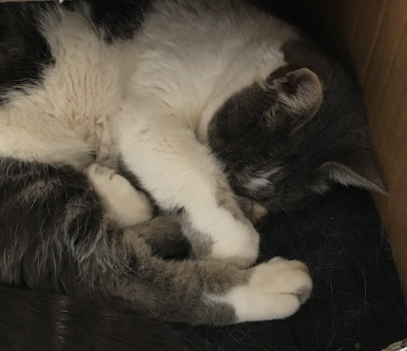
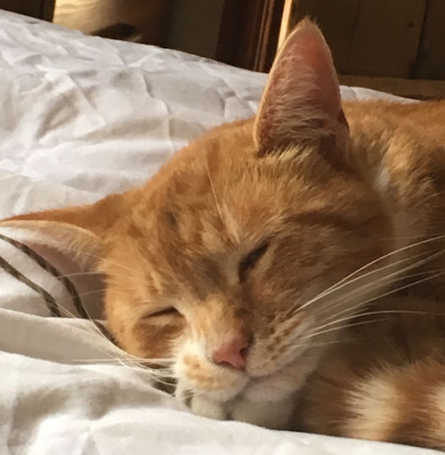
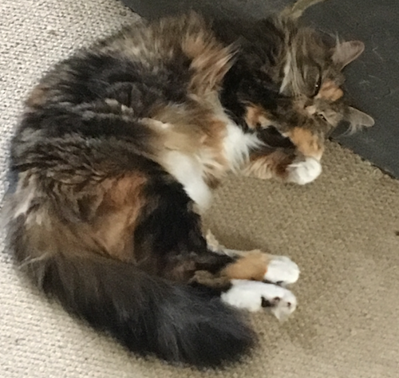

MEOWWORLD OSCP Demo
Demos written in .NET and hosted on OpenShift container platform, showing an ASP.NET/Razor app and webservices.



  
  
Output from Meow-world .NET Webservices
Last called (not called).
Webservice response time (not called)
(No Cat Chosen)
Output from direct Webservices.
Last called (not called).
Webservice response time (not called)
No URL Entered
Response from Webservice.